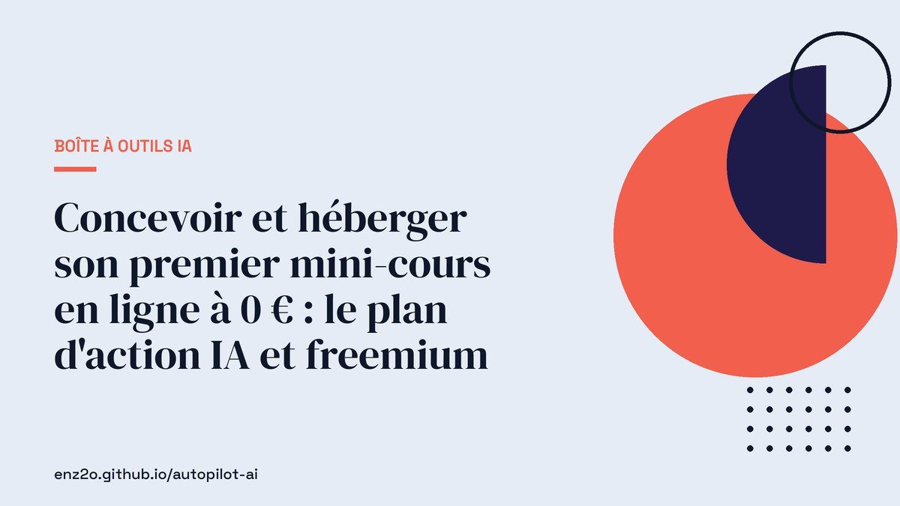

Concevoir et héberger son premier mini-cours en ligne à 0 € : le plan d'action IA et freemium
2026-11-22
Article contenant des liens affiliés.

Partager son savoir sous forme de mini-cours est un excellent moyen pour un freelance de prouver son expertise, pour un étudiant de valoriser ses compétences ou pour un créateur de monétiser une communauté. Pourtant, de nombreux indépendants abandonnent avant même de publier leur première leçon. Ils pensent souvent qu'il faut investir plusieurs centaines d'euros dans des plateformes d'hébergement spécialisées, du matériel audio haut de gamme ou passer des mois à rédiger du contenu.
La réalité est bien plus accessible. Aujourd'hui, en combinant l'intelligence artificielle pour la structuration pédagogique et des logiciels freemium pour la production et la diffusion, il est tout à fait possible de lancer une formation en ligne professionnelle sans débourser un seul centime. Voici le plan d'action pas à pas pour passer de l'idée au premier élève inscrit.
Étape 1 : Structurer un programme pédagogique avec l'IA
L'erreur classique quand on crée sa première formation est de vouloir trop en faire. Un mini-cours efficace ne doit pas être une encyclopédie : il doit résoudre un problème précis, de manière ciblée, en 30 à 60 minutes de contenu total, découpé en 4 ou 5 leçons courtes.
Pour gagner un temps précieux dans la conception, vous pouvez utiliser un modèle d'IA générative gratuit (comme ChatGPT, Claude ou Gemini) pour jouer le rôle d'ingénieur pédagogique.
Voici la méthode d'échanges à suivre :
- Cadrer la promesse : Indiquez à l'IA votre sujet principal et demandez-lui de lister les 3 blocages majeurs que rencontre votre audience cible.
- Générer le plan de cours : Demandez à l'IA de concevoir une progression étape par étape. Chaque leçon doit répondre à une question spécifique et se conclure par une action concrète pour l'apprenant.
- Rédiger la trame des leçons : Pour chaque vidéo, sollicitez l'IA afin qu'elle vous fournisse un plan détaillé comprenant une introduction, deux ou trois points d'explication clairs et un exercice d'application immédiat.
L'IA vous apporte la structure initiale ; il ne vous reste plus qu'à personnaliser l'ensemble avec vos propres exemples, vos anecdotes et vos retours d'expérience du terrain.
Étape 2 : Créer des supports visuels et des documents d'accompagnement
Une fois le plan validé, vous devez préparer les éléments visuels pour illustrer votre propos. Il n'est absolument pas nécessaire d'être un expert en design pour obtenir un rendu sobre et attrayant.
- Les diaporamas : Vous pouvez utiliser les fonctionnalités gratuites de Canva ou des générateurs de présentations assistés par IA pour concevoir des diapositives épurées. Gardez une règle simple à l'esprit : une seule idée centrale ou un schéma explicatif par diapositive.
- Les fiches récapitulatives : Un bon cours s'accompagne souvent de fiches mémo au format PDF. Demandez à votre outil d'IA de synthétiser le contenu de votre leçon sous forme de checklist, de modèle à remplir ou de guide de référence. Vous pouvez ensuite mettre en page ces éléments rapidement dans un traitement de texte avant de les exporter en PDF.
Étape 3 : Capturer son écran et enregistrer un audio propre
Pour le format d'un mini-cours, une capture d'écran accompagnée de vos commentaires vocaux ou une présentation commentée s'avère parfaitement adaptée.
Du côté du logiciel de capture, des outils gratuits comme OBS Studio ou les versions freemium de Loom et Clipchamp permettent d'enregistrer facilement votre écran ainsi que votre webcam si vous souhaitez apparaître dans un coin de l'image.
En revanche, il convient d'accorder une attention particulière à la qualité sonore. Une image moyenne reste acceptable, mais un son médiocre avec du grésillement fera fuir vos apprenants. Si le microphone intégré de votre ordinateur s'avère trop juste ou capte les bruits ambiants, l'usage d'un microphone usb micro podcast permet d'obtenir un rendu clair et agréable immédiatement sans installation complexe. Pour travailler au calme dans un environnement bruyant, l'utilisation d'un casque micro anti bruit s'avère également très utile lors des phases de montage et de vérification audio.
Étape 4 : Héberger et automatiser la livraison de la formation à 0 €
C'est la phase où la plupart des créateurs se demandent comment donner accès au cours de façon sécurisée sans payer un abonnement mensuel élevé. La solution réside dans l'utilisation d'un outil tout-en-un proposant une offre gratuite pérenne.
La plateforme française Systeme.io est parfaitement adaptée à ce besoin. Dans sa version gratuite, elle permet d'héberger un espace formation complet, de créer des pages web de présentation et de gérer une liste de contacts e-mail.
Voici comment organiser cette étape sans frais :
- Créer la formation dans le tableau de bord : Sur Systeme.io, ajoutez vos modules, créez vos leçons et intégrez vos vidéos ainsi que les documents PDF téléchargeables.
- Concevoir la page d'inscription : Utilisez les modèles de pages intégrés pour présenter votre formation, résumer le programme et ajouter un formulaire de capture d'e-mail ou de commande.
- Configurer la livraison automatique : Automatisez le processus pour que dès qu'un utilisateur remplit le formulaire, un compte lui soit créé et que ses identifiants d'accès au cours lui soient envoyés immédiatement par e-mail.
Grâce à l'écosystème de Systeme.io, l'ensemble du processus tourne en autonomie complète une fois la configuration initiale terminée.
Étape 5 : Récolter des retours et faire évoluer son contenu
Lorsque vos premiers apprenants rejoignent votre espace de formation, profitez-en pour améliorer votre contenu de façon continue :
- Insérer un formulaire de feedback : Placez un lien vers un questionnaire court à la fin du dernier module pour demander aux utilisateurs ce qu'ils ont pensé de la pédagogie et des exercices.
- Compléter les modules : Si plusieurs élèves posent la même question sur un point particulier, utilisez l'IA pour rédiger une fiche complémentaire ou tournez une mini-vidéo de 2 minutes pour apporter une précision supplémentaire.
En résumé : passer à l'action dès aujourd'hui
Concevoir et distribuer un mini-cours en ligne ne nécessite plus des budgets considérables ni des compétences techniques avancées. En exploitant judicieusement l'intelligence artificielle pour rédiger et structurer votre contenu, combinée à des outils freemium pour l'enregistrement et l'hébergement, vous disposez de tous les leviers pour concrétiser votre projet à zéro euro.
Sélectionnez un sujet que vous maîtrisez, demandez à l'IA de vous aider à élaborer la trame des leçons, et publiez votre premier module dès cette semaine !